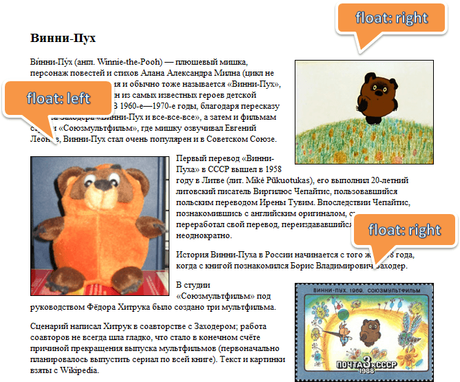
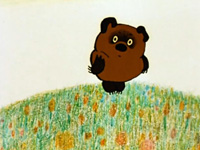
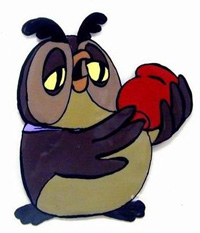
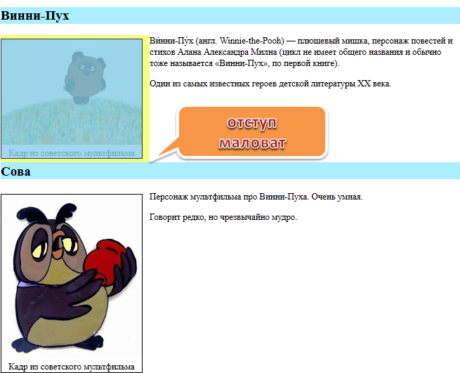
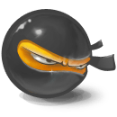

Свойство float
Свойство float в CSS занимает особенное место. До его появления расположить два блока один
слева от другого можно было лишь при помощи таблиц. Но в его работе есть ряд особенностей. Поэтому его
иногда не любят, но при их понимании float станет вашим верным другом и помощником.
Далее мы рассмотрим, как работает float, разберем решения сопутствующих проблем, а также
ряд полезных рецептов.
Как работает float
Синтаксис:
float: left | right | none | inherit;
При применении этого свойства происходит следующее:
-
Элемент позиционируется, как обычно, а затем вынимается из документа потока и сдвигается
влево (для left) или вправо (для right) до того как коснется либо границы
родителя, либо другого элемента с float.
-
Если пространства по горизонтали не хватает для того, чтобы вместить элемент, то он сдвигается вниз
до тех пор, пока не начнет помещаться.
-
Другие непозиционированные блочные элементы без float ведут себя так, как будто элемента
с float нет, так как он убран из потока.
-
Строки (inline-элементы), напротив, «знают» о float и обтекают элемент
по сторонам.
Еще детали:
-
Элемент при наличии float получает display: block.
То есть, указав элементу, у которого display: inline свойство float: left/right,
мы автоматически сделаем его блочным. В частности, для него будут работать width/height.
Исключением являются некоторые редкие display, наподобие inline-table
и run-in (см. Relationships between «display», «position» and «float»).
-
Ширина float-блока определяется по содержимому («CSS 2.1, 10.3.5»).
-
Вертикальные отступы margin элементов с float не сливаются с отступами
соседей, в отличие от обычных блочных элементов.
Это пока только теория. Далее мы рассмотрим происходящее на примере.
Текст с картинками
Одно из первых применений float, для которого это свойство когда-то было придумано - это верстка
текста с картинками, отжатыми влево или вправо.
Например, вот страница о Винни-Пухе с картинками, которым поставлено свойство float:

Ее HTML-код выглядит примерно
так:
<img src="1.jpg" style="float: right">
<p>Текст...</p>
<p>Текст...</p>
<img src="2.jpg" style="float: left">
<p>Текст...</p>
<img src="3.jpg" style="float: right">
<p>Текст...</p>
Каждая картинка, у которой есть float, обрабатывается в точности
по алгоритму, указанному выше.
Посмотрим, например, как выглядело бы начало текста без float:

Ви́нни-Пу́х (англ. Winnie-the-Pooh) — плюшевый мишка, персонаж повестей и стихов Алана Александра Милна
(цикл не имеет общего названия и обычно тоже называется «Винни-Пух», по первой книге).
Один из самых известных героев детской литературы XX века.
В 1960-е—1970-е годы, благодаря пересказу Бориса Заходера «Винни-Пух и все-все-все», а затем и фильмам
студии «Союзмультфильм», где мишку озвучивал Евгений Леонов, Винни-Пух стал очень популярен и в Советском Союзе.
-
Элемент img вынимается из документа потока. Иначе говоря, последующие блоки
начинают вести себя так, как будто его нет, и заполняют освободившееся место (изображение для наглядности
полупрозрачно):
Ви́нни-Пу́х (англ. Winnie-the-Pooh) — плюшевый мишка, персонаж повестей и стихов Алана Александра Милна
(цикл не имеет общего названия и обычно тоже называется «Винни-Пух», по первой книге).
Один из самых известных героев детской литературы XX века.
В 1960-е—1970-е годы, благодаря пересказу Бориса Заходера «Винни-Пух и все-все-все», а затем и фильмам
студии «Союзмультфильм», где мишку озвучивал Евгений Леонов, Винни-Пух стал очень популярен и в Советском Союзе.
-
Элемент img сдвигается максимально вправо (при float: right):
Ви́нни-Пу́х (англ. Winnie-the-Pooh) — плюшевый мишка, персонаж повестей и стихов Алана Александра Милна
(цикл не имеет общего названия и обычно тоже называется «Винни-Пух», по первой книге).
Один из самых известных героев детской литературы XX века.
В 1960-е—1970-е годы, благодаря пересказу Бориса Заходера «Винни-Пух и все-все-все», а затем и фильмам
студии «Союзмультфильм», где мишку озвучивал Евгений Леонов, Винни-Пух стал очень популярен и в Советском Союзе.
-
Строки, в отличие от блочных элементов, «чувствуют» float и уступают ему место, обтекая
картинку слева:
Ви́нни-Пу́х (англ. Winnie-the-Pooh) — плюшевый мишка, персонаж повестей и стихов Алана Александра Милна
(цикл не имеет общего названия и обычно тоже называется «Винни-Пух», по первой книге).
Один из самых известных героев детской литературы XX века.
В 1960-е—1970-е годы, благодаря пересказу Бориса Заходера «Винни-Пух и все-все-все», а затем и фильмам
студии «Союзмультфильм», где мишку озвучивал Евгений Леонов, Винни-Пух стал очень популярен и в Советском Союзе.
При float: left - все то же самое, только img смещается влево (или не смещается,
если он и так у левого края), а строки - обтекают справа.
Строки и инлайн-элементы смещаются, чтобы уступать место float. Обычные блоки - ведут себя
так, как будто элемента нет.
Чтобы это видеть, добавим параграфам фон и рамку, а также сделаем изображение немного прозрачным:
Ви́нни-Пу́х (англ. Winnie-the-Pooh) — плюшевый мишка, персонаж повестей и стихов Алана Александра Милна
(цикл не имеет общего названия и обычно тоже называется «Винни-Пух», по первой книге).
Один из самых известных героев детской литературы XX века.
В 1960-е—1970-е годы, благодаря пересказу Бориса Заходера «Винни-Пух и все-все-все», а затем и фильмам
студии «Союзмультфильм», где мишку озвучивал Евгений Леонов, Винни-Пух стал очень популярен и в Советском Союзе.
Как видно из рисунка, параграфы проходят «за» float. При этом строки в них о float
знают и обтекают их, поэтому соответствующая часть параграфа пуста.
Блок с float
Свойство float можно поставить любому элементу, не обязательно картинке. При этом элемент
станет блочным.
Посмотрим, как это работает, на конкретной задаче - сделать рамку с названием вокруг картинки с Винни.
HTML будет такой:
<h3>Винни-Пух</h3>
<div class="left-picture">
<img src="winnie-mult.jpg">
<div>Кадр из советского мультфильма</div>
</div>
<p>Текст...</p>
... То есть, div.left-picture включает в себя картинку и заголовок к ней. Добавим стиль с
float:
.left-picture {
float: left;
/* Рамочка и отступ для красоты (не обязательно) */
margin: 0 10px 5px 0;
text-align: center;
border: 1px solid black;
}
Результат:
Винни-Пух
Кадр из советского мультфильма
Ви́нни-Пу́х (англ. Winnie-the-Pooh) — плюшевый мишка, персонаж повестей и стихов Алана Александра Милна
(цикл не имеет общего названия и обычно тоже называется «Винни-Пух», по первой книге).
Один из самых известных героев детской литературы XX века.
Один из самых известных героев детской литературы XX века.
Заметим, что блок div.left-picture «обернул» картинку и текст под ней, а не растянулся на всю
ширину. Это следствие того, что ширина блока с float определяется по содержимому.
Очистка под float
Разберем еще одну особенность использования свойства float.
Для этого выведем персонажей из мультфильма «Винни-Пух». Цель:
Винни-Пух
Кадр из советского мультфильма
Ви́нни-Пу́х (англ. Winnie-the-Pooh) — плюшевый мишка, персонаж повестей и стихов Алана Александра Милна
(цикл не имеет общего названия и обычно тоже называется «Винни-Пух», по первой книге).
Один из самых известных героев детской литературы XX века.
Сова

Кадр из советского мультфильма
Персонаж мультфильма про Винни-Пуха. Очень умная.
Говорит редко, но чрезвычайно мудро.
Реализуем ее, шаг за шагом.
Шаг 1. Добавляем информацию
Попробуем просто добавить Сову после Винни-Пуха:
<h3>Винни-Пух</h3>
<div class="left">Картинка</div>
<p>... Текст о Винни...</p>
<h3>Сова</h3>
<div class="left">Картинка</div>
<p>... Текст о Сове...</p>
Результат такого кода будет
странным, но предсказуемым:
Винни-Пух
Кадр из советского мультфильма
Ви́нни-Пу́х (англ. Winnie-the-Pooh) — плюшевый мишка, персонаж повестей и стихов Алана Александра Милна
(цикл не имеет общего названия и обычно тоже называется «Винни-Пух», по первой книге).
Один из самых известных героев детской литературы XX века.
Сова
Кадр из советского мультфильма
Персонаж мультфильма про Винни-Пуха. Очень умная.
Говорит редко, но чрезвычайно мудро.
Произошло следующее:
-
Заголовок <h3>Сова</h3> не заметил float (он же блочный
элемент) и расположился сразу после предыдущего параграфа <p>...Текст о Винни...</p>.
-
После него идет float-элемент - картинка «Сова». Он был сдвинут влево. Согласно
алгоритму, он двигается до левой границы или до касания с другим
float-элементом, что и произошло (картинка «Винни-Пух»).
-
Так как у Совы float: left, то последующий текст обтекает ее справа.
Шаг 2. Свойство clear
Мы, конечно же, хотели бы расположить заголовок «Сова» и остальную информацию ниже Винни-Пуха.
Для решения возникшей проблемы придумано свойство clear.
Синтаксис
clear: left | right | both;
Применение этого свойства сдвигает элемент вниз до тех пор, пока не закончатся float
слева/справа/с обеих сторон.
Применим его к заголовку h3:
h3 {
clear: left;
}
Результат получившегося кода
будет ближе к цели, но все еще не идеален:

Элементы теперь в нужном порядке. Но куда пропал отступ margin-top у заголовка «Сова»?
Теперь заголовок «Сова» прилегает снизу почти вплотную к картинке, с учетом ее margin-bottom,
но без своего большого отступа margin-top.
Таково поведение свойства clear. Оно сдвинуло элемент h3 вниз ровно настолько,
чтобы элементов float не было сбоку от его верхней границы.
Если посмотреть на элемент заголовка внимательно в инструментах разработчика, то можно заметить отступ
margin-top у заголовка по-прежнему есть, но он располагается «за» элементом float
и не учитывается при работе в clear.
Чтобы исправить ситуацию, можно добавить перед заголовком пустой промежуточный элемент без отступов,
с единственным свойством clear: both. Тогда уже под ним отступ заголовка будет работать нормально:
<h3>Винни-Пух</h3>
<div class="left">Картинка</div>
<p>Текст</p>
<div style="clear: both"></div>
<h3>Сова</h3>
<div class="left">Картинка</div>
<p>Текст</p>
Результат получившегося кода:
Винни-Пух
Кадр из советского мультфильма
Ви́нни-Пу́х (англ. Winnie-the-Pooh) — плюшевый мишка, персонаж повестей и стихов Алана Александра Милна
(цикл не имеет общего названия и обычно тоже называется «Винни-Пух», по первой книге).
Один из самых известных героев детской литературы XX века.
Сова
Кадр из советского мультфильма
Персонаж мультфильма про Винни-Пуха. Очень умная.
Говорит редко, но чрезвычайно мудро.
-
Свойство clear гарантировало, что <div style="clear: both"> будет
под картинкой с float.
-
Заголовок <h3>Сова</h3> идет после этого <div>.
Так что его отступ учитывается.
Заполнение блока-родителя
Итак, мы научились располагать другие элементы под float. Теперь рассмотрим следующую
особенность.
Из-за того, что блок с float удален из потока, родитель не выделяет под него места.
Например, выделим для информации о Винни-Пухе красивый элемент-контейнер <div class="hero">:
<div class="hero">
<h3>Винни-Пух</h3>
<div class="left">Картинка</div>
<p>Текст</p>
</div>
Стиль контейнера:
.hero {
background: #D2B48C;
border: 1px solid red;
}
Результат получившегося кода:
Винни-Пух
Кадр из советского мультфильма
Ви́нни-Пу́х (англ. Winnie-the-Pooh) — плюшевый мишка, персонаж повестей и стихов Алана Александра Милна
(цикл не имеет общего названия и обычно тоже называется «Винни-Пух», по первой книге).
Один из самых известных героев детской литературы XX века.
Элемент с float оказался выпавшим за границу родителя .hero.
Чтобы этого не происходило, используют одну из следующих техник.
Поставить родителю float
Элемент с float обязан расшириться, чтобы вместить вложенный float.
Поэтому, если это допустимо, то установка float контейнеру все исправит:
.hero {
background: #D2B48C;
border: 1px solid red;
float: left;
}
Винни-Пух
Кадр из советского мультфильма
Ви́нни-Пу́х (англ. Winnie-the-Pooh) — плюшевый мишка, персонаж повестей и стихов Алана Александра Милна
(цикл не имеет общего названия и обычно тоже называется «Винни-Пух», по первой книге).
Один из самых известных героев детской литературы XX века.
Разумеется, не всегда можно поставить родителю float, так что смотрим дальше.
Добавим в родителя элемент с clear
Добавим элемент <div style="clear: both"> в самый конец контейнера .hero.
Он с одной стороны будет «нормальным» элементом, в потоке, и контейнер будет обязан выделить под него
пространство, с другой - он знает о float и сместится вниз.
Соответственно, и контейнер вырастет в размере:
<div class="hero">
<h3>Винни-Пух</h3>
<div class="left">Картинка</div>
<p>Текст</p>
<div style="clear: both"></div>
</div>
Винни-Пух
Кадр из советского мультфильма
Ви́нни-Пу́х (англ. Winnie-the-Pooh) — плюшевый мишка, персонаж повестей и стихов Алана Александра Милна
(цикл не имеет общего названия и обычно тоже называется «Винни-Пух», по первой книге).
Один из самых известных героев детской литературы XX века.
Результат - правильное отображение, как и в примере выше.
Открыть код.
Единственный недостаток этого метода - лишний HTML-элемент в разметке.
Универсальный класс clearfix
Чтобы не добавлять в HTML-код лишний элемент, можно задать его через :after
.clearfix:after {
content: ""; /* Добавить содержимое: "" */
display: block; /* Сделать блоком, т.к. inline не может иметь clear */
clear: both; /* С обеих сторон clear */
}
Винни-Пух
Кадр из советского мультфильма
Ви́нни-Пу́х (англ. Winnie-the-Pooh) — плюшевый мишка, персонаж повестей и стихов Алана Александра Милна
(цикл не имеет общего названия и обычно тоже называется «Винни-Пух», по первой книге).
Один из самых известных героев детской литературы XX века.
overflow: auto/hidden
Если добавить родителю overflow: hidden или overflow: auto, то все станет хорошо.
.hero {
overflow: auto;
}
Винни-Пух
Кадр из советского мультфильма
Ви́нни-Пу́х (англ. Winnie-the-Pooh) — плюшевый мишка, персонаж повестей и стихов Алана Александра Милна
(цикл не имеет общего названия и обычно тоже называется «Винни-Пух», по первой книге).
Один из самых известных героев детской литературы XX века.
Этот метод работает во всех браузерах, полный код в песочнице.
Несмотря на внешнюю странность, этот способ не является «хаком». Такое поведение прописано в спецификации CSS.
Однако, установка overflow может привести к появлению полосы прокрутки, способ с псевдоэлементом
:after более безопасен.
float вместо display: inline-block
При помощи float можно размещать блочные элементы в строке, похоже на display: inline-block:
<style>
.gallery li {
float: left;
width: 130px;
list-style: none;
/* Красивости */
border: 1px solid black;
text-align: center;
margin: 5px;
}
</style>
<ul class="gallery">
<li>
<img src="https://js.cx/carousel/1.png">
<div>Картинка 1</div>
</li>
<li>
<img src="https://js.cx/carousel/2.png">
<div>Картинка 2</div>
</li>
<li>
<img src="https://js.cx/carousel/3.png">
<div>Картинка 3</div>
</li>
<li>
<img src="https://js.cx/carousel/4.png">
<div>Картинка 4</div>
</li>
<li>
<img src="https://js.cx/carousel/5.png">
<div>Картинка 5</div>
</li>
<li>
<img src="https://js.cx/carousel/6.png">
<div>Картинка 6</div>
</li>
<li>
<img src="https://js.cx/carousel/7.png">
<div>Картинка 7</div>
</li>
<li>
<img src="https://js.cx/carousel/8.png">
<div>Картинка 8</div>
</li>
<li>
<img src="https://js.cx/carousel/9.png">
<div>Картинка 9</div>
</li>
</ul>
-

Картинка 1
-

Картинка 2
-
Картинка 3
-

Картинка 4
-

Картинка 5
-

Картинка 6
-

Картинка 7
-

Картинка 8
-
Картинка 9
Элементы float: left двигаются влево, а если это невозможно, то вниз, автоматически адаптируясь
под ширину контейнера, получается эффект, аналогичный display: inline-block, но с особенностями
float.
Верстка в несколько колонок
Свойство float позволяет делать несколько вертикальных колонок.
float: left + float: right
Например, для верстки в две колонки можно сделать два <div>. Первому указать
float: left (левая колонка), а правому - float: right (правая колонка).
Чтобы они не ссорились, каждой колонке нужно дополнительно указать ширину:
<div>Шапка</div>
<div class="column-left">Левая колонка</div>
<div class="column-right">Правая колонка</div>
<div class="footer">Низ</div>
Стили:
.column-left {
float: left;
width: 30%;
}
.column-right {
float: left;
width: 70%;
}
.footer {
clear: both;
}
Шапка
Персонажи:
-
Винни-Пух
-
Ослик Иа
-
Сова
-
Кролик
Винни-Пух
Ви́нни-Пу́х (англ. Winnie-the-Pooh) — плюшевый мишка, персонаж повестей и стихов Алана Александра Милна
(цикл не имеет общего названия и обычно тоже называется «Винни-Пух», по первой книге).
Один из самых известных героев детской литературы XX века.
В 1960-е—1970-е годы, благодаря пересказу Бориса Заходера «Винни-Пух и все-все-все»,
а затем и фильмам студии «Союзмультфильм», где мишку озвучивал Евгений Леонов, Винни-Пух стал очень
популярен и в Советском Союзе.
Низ
В эту структуру легко добавить больше колонок с разной шириной. Правой колонке можно было бы указать и
float: right.
float + margin
Еще вариант - сделать float для левой колонки, а правую остановить в потоке, но с отбивкой
через margin:
.column-left {
float: left;
width: 30%;
}
.column-right {
margin-left: 30%;
}
.footer {
clear: both;
}
Шапка
Персонажи:
-
Винни-Пух
-
Ослик Иа
-
Сова
-
Кролик
Винни-Пух
Ви́нни-Пу́х (англ. Winnie-the-Pooh) — плюшевый мишка, персонаж повестей и стихов Алана Александра Милна
(цикл не имеет общего названия и обычно тоже называется «Винни-Пух», по первой книге).
Один из самых известных героев детской литературы XX века.
В 1960-е—1970-е годы, благодаря пересказу Бориса Заходера «Винни-Пух и все-все-все»,
а затем и фильмам студии «Союзмультфильм», где мишку озвучивал Евгений Леонов, Винни-Пух стал очень
популярен и в Советском Союзе.
Низ
В примере выше показана небольшая проблема. Колонки не растягиваются до одинаковой высоты. Конечно,
это не имеет значения, если фон одинаковый, но что, если он разный?
В современных браузерах эту же задачу лучше решает flexbox.
Для старых есть различные обходы и трюки, которые позволяют обойти проблему в ряде ситуаций, но они выходят
за рамки нашего обсуждения.